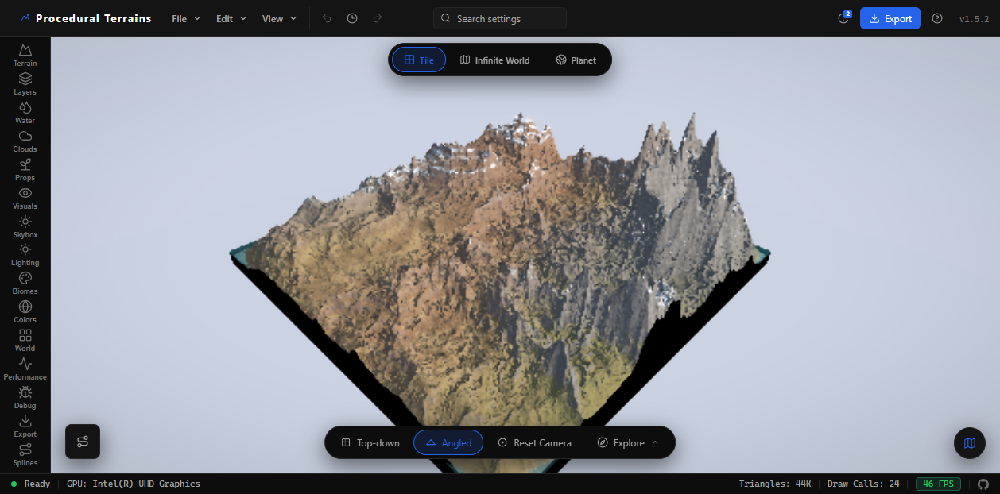
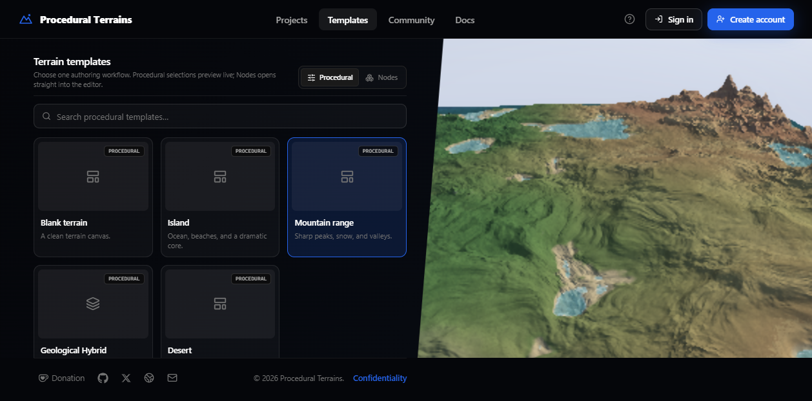
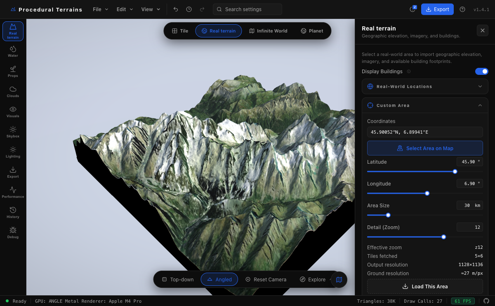
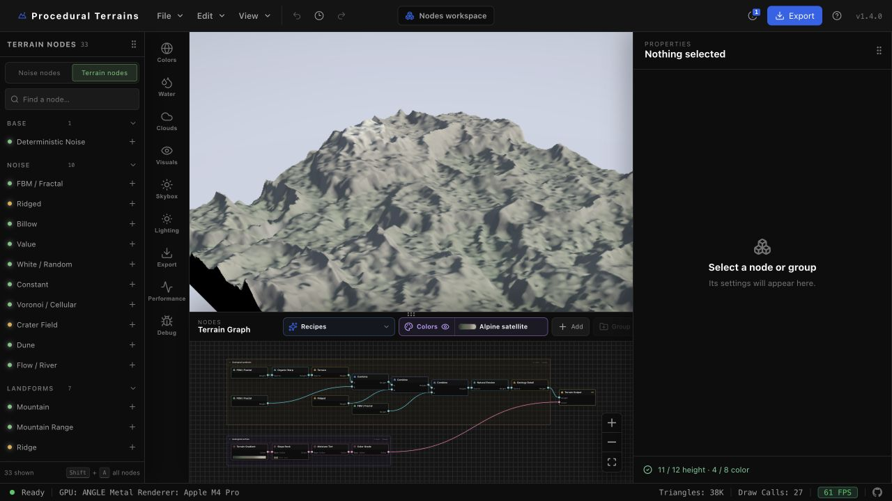

研究已归档：
当前页面保留固定提交的能力证据和可运行技术原型，不再继续扩展。原型不是生产可用或竞技公平的 RTS 地图生成器；未来按游戏地图、地理地图或三维地形资产的明确需求重新选型。
01 / CAPABILITY SHOWCASE
从一块地形，
到无边世界，
再到一颗星球。
Procedural Terrains 不是单个噪声 Demo，而是一套在浏览器中完成地形生成、环境塑造、探索和生产导出的创作工具链。
LIVE EVIDENCE / LOCAL RUNTIME
同一套地形语言，三种空间组织

BUILT-IN STARTING POINTS / COMPLETE INVENTORY
原库自带样例，一个也不省略
以下对应上游首页与 Templates 页面中的完整创作入口。颜色、水体等微型 preset 不混入样例计数，避免把参数预设和项目起点混为一谈。
Procedural
直接参数、Noise Layers，以及 Tile / Infinite World / Planet 三种世界流程。
Nodes
从可编译地形图出发，节点与颜色路径都能保存为项目数据。
Manual Terrain
在干净地形上拖放山体、山谷、山脊、台地和陨石坑并直接变换。
Real Terrain
选择真实位置，载入高程、影像与建筑，进入专门的地理工作区。

Procedural templates
5 / 5- Blank terrain干净地形画布
- Island海洋、沙滩与核心山体
- Mountain range尖峰、积雪与山谷
- Geological Hybrid风化台地、扭曲山体与岩脊
- Desert沙丘、干涸盆地与暖光
Nodes recipes
8 / 8- Blank graph仅含 Terrain Output 的平面
- Geological Hybrid可编辑混合地质配方
- Alpine ridges山体、岩层、碎石坡与排水
- Layered highlands宽阔高地、地层与热风化
- Wind dunes非对称沙海、滑移面与砂纹
- River canyon河道切槽、支沟与砂岩层
- Crater basin玄武岩、火山渣与灰烬撞击盆地
- River valleys主河道、汇流支流与洪泛平原
来源：ProjectTemplates.js ↗ 与 NodeProjectTemplates.js ↗；8 个节点配方均通过可达性、图校验与实时编译测试。
AUTHORING
从参数滑杆到节点图，再到真实地形
确定性噪声、手工画笔、样条线、节点配方与真实世界高程不是孤立功能，而是进入同一地形状态与渲染管线的多种入口。


ENVIRONMENT
环境不是背景贴图
水面反射、海岸与泡沫遮罩、水下效果、程序天空、昼夜、云和大气都参与实时场景。
PRODUCTION OUTPUT
不止保存一张截图
可输出 GLB/GLTF、OBJ、高度/颜色/法线纹理、生物群系 splat、碰撞网格和水体遮罩。
02 / TECHNICAL PRINCIPLES
它为什么能实时变化？
关键不在于“把一张高度图贴上去”，而在于让同一个确定性地形函数贯穿显示、LOD、绘制与导出。
处理面板、项目状态、撤销与参数输入
组织场景、相机、材质、chunk 与 uniform
把 draw call、buffer 和 Shader 交给浏览器 GPU
并行计算顶点高度、像素法线和生物群系颜色
生成实时画面，也能烘焙高度、法线与导出资产
确定性地形函数
地形是 (world XZ, seed, params) 的纯函数。相同输入得到相同形状；相机只决定 LOD，不参与塑形。
噪声栈编译成 GLSL
add、carve、replace 等可序列化噪声层先组成规则，再生成 Shader 代码；编辑参数多数只需更新 uniform。
查看 codegen ↗LOD 只减少几何，不牺牲函数
不同分辨率 chunk 仍采样同一高度规则；skirt ring 向下延伸，用来遮住相邻 LOD 的边缘裂缝。
查看 ChunkGeometry.js ↗像素阶段重算法线
fragment Shader 对高度函数做有限差分，远处即使几何较稀，光照细节仍可保持清晰；代价是每像素多次高度求值。
查看 TerrainMaterial.js ↗03 / USE CASES
它适合解决什么问题？
判断标准不是“画面够不够酷”，而是参数化地形、浏览器编辑与目标资产格式是否真正缩短工作流。
游戏世界快速原型
在进入关卡工具前快速确定山脉、岛屿、水位、生物群系和探索尺度，再导出高度图、碰撞与网格。
- 交付物
- GLB / RAW / R16 / splat / collision
影视与概念世界构建
用确定性 seed 建立可反复调整的远景地貌、行星和环境光照，输出到 Blender 继续精修。
- 交付物
- Blender scene assets / textures / reference frames
真实地形可视化原型
把位置高程、影像和建筑足迹转入可交互 3D 场景，适合规划沟通、路线概念和空间叙事原型。
- 边界
- 不是测绘级 GIS 或工程高程认证工具
Shader 与 LOD 教学研究
同一仓库同时暴露噪声代码生成、chunk LOD、流送、cube-sphere、水和 GPU bake，适合做可见实验。
- 证据
- 452 tests / performance panels / serializable state
BUILT EXTENSION / RUNNABLE PROOF
RTS Map Profile · 从地形资产到游戏地图语义
独立原型已经把确定性高度场继续加工为双阵营基地、两条战略路线、镜像资源、通行网格与建造网格；WebGL 用于三维检查，Canvas 2D 作为数据回退，并可直接导出带稳定 ID 的地图 JSON。
- 已验证
- Seed 复现 / 镜像公平 / 出生点有效 / 语义图层 / JSON 导出
- 仍未包含
- 具体游戏协议、单位寻路运行时、建筑与战斗规则
不应直接承诺：
低端移动设备上的全质量运行、测绘级精度、物理侵蚀科学模拟、各游戏引擎导入后的完全视觉一致，当前研究都还没有对应证据。
04 / EXTENSION DIRECTIONS
如果恢复研究，应该扩什么？
扩展项必须同时给出价值、源码切入点和验收标准，避免把愿望清单当作路线图。
01PERFORMANCE
按世界模式拆包，并预热关键 Shader
本地首次切换 Infinite World 与 Planet 都出现了可感知的编译等待；构建同时报告 Engine、入口与 Three.js chunk 超过 500 kB。
- 切入点
Engine.js、planetBundle.js、Vite manualChunks- 验收
- 首屏请求下降；切换遮罩时间有数据化改善；三模式状态不丢失
02FIDELITY
建立“实时画面 → 烘焙 → 目标引擎”的一致性夹具
导出选项很完整，但单元测试和 preflight 不能替代 Unity、Unreal、Godot 与 Blender 的实际导入对比。
- 切入点
TerrainExporter.js、ExportValidator、目标预设- 验收
- 固定 seed 的高度误差、法线方向、轴向、比例和水位均可自动核对
03ENGINE API
把噪声图、地形采样和世界模式变成稳定插件接口
当前 Engine 边界清晰但体量较大。优先抽取 operator registry、GLSL codegen 与 height sampler，比整体搬运更容易复用。
- 切入点
NoiseStack.js、noiseStackCodegen.js、GpuHeightSampler.js- 验收
- 第三方噪声节点可注册、序列化、生成 Shader，并在 Tile/Infinite/Planet 中一致运行
04COMPUTE
渐进式 GPU 计算，而不是盲目重写 WebGPU
现有 WebGPU 侵蚀模块可作为试点：保留 WebGL2 渲染，把高收益计算迁移到可检测、可回退的 compute 路径。
- 切入点
erosionWebGPU、GPU tier detection、CPU fallback- 验收
- 支持设备获得可测加速；不支持设备结果一致且交互仍可用
05GAMEPLAY PROFILE
把地形资产升级为可验证的 RTS 地图语义
当前研究原型已证明基地平整、镜像资源、通行/建造网格和稳定路线可以作为独立层生成；下一步是接入具体游戏的地图协议与运行时寻路。
- 验收
- 固定 Seed 可重放；阵营资源和路线公平；导出数据能被目标游戏加载并完成一局路径测试